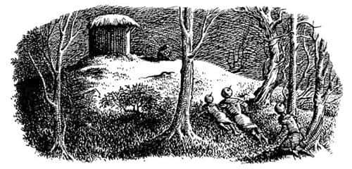
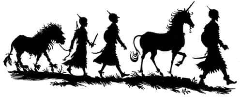

İyi Bir Gece
Yaklaşık dört saat sonra Tirian biraz uyumak için kendini ranzalardan birine attı. İki çocuk şimdiden horlamaya başlamıştı bile. Tirian kendisi yatmadan önce çocukları yatırmıştı, yoksa bütün gece uyumayacaklardı; o yaştaki çocukların uyumadan edemeyeceğini biliyordu. Uyutmadan önce onları iyice yormuştu. İlk önce Jill’le biraz okçuluk çalışmışlardı; kızın Narnialılar kadar iyi olmasa da, fena olmadığını fark etmişti. Aslında Jill tavşan bile vurabilmişti (kuşkusuz konuşan tavşan değildi; batı Narnia’da sürüyle sıradan tavşan vardır). Tavşan derisi yüzülmüş, temizlenmiş olarak asılı duruyordu. Tirian, çocukların ikisinin de bu soğuk ve hoş kokmayan işi bildiğini anlamıştı; bu tür şeyleri Prens Rilian zamanında devlerin ülkesine yaptıkları seyahatte öğrenmişlerdi. Tirian, Eustace’e kılıçla kalkanı nasıl kullanacağını öğretmeyi denemişti. Eustace daha önceki maceralarında kılıç kavgası hakkında birçok şey öğrenmişti ama hepsinde düz Narnia kılıcı kullanmış, hiç eğik Calormen palası kullanmamıştı. Tabii bu da her şeyi zorlaştırıyordu, çünkü birçok hareket oldukça farklı yapılıyordu, uzun kılıçla öğrendiği hareketleri unutmak zorundaydı. Tirian, onun iyi bir gözlemci olduğunu, ayağını iyi kullandığını fark etmişti. Çocukların gücü şaşırtmıştı onu. Aslında ikisi de birkaç saat öncesine göre daha güçlü, daha büyük ve daha olgun görünüyordu. Narnia havası bizim dünyamızdan giden ziyaretçilerin üzerinde böyle bir etki yapar.
Üçü de yapacakları ilk işin Ahır Tepe’ye dönüp Cevher’i kurtarmayı denemek olduğuna karar vermişti. Bundan sonra, eğer başarılı olurlarsa, doğuya gidip Sentor Bilge’nin Cair Paravel’den getireceği küçük orduyla buluşmayı deneyeceklerdi.
Tirian gibi tecrübeli bir avcı ve savaşçı istediği saatte uyanabilir. Tirian tüm endişeleri aklından çıkarıp gece saat dokuzda uyanmayı tasarlayarak uykuya daldı. Uyandığında sanki sadece bir saniye geçmiş gibiydi; havanın karanlık olmasından ve hislerinden çıkardığına göre, tam zamanında uyanmıştı. Kalktı, miğferini giydi (zırhıyla uyumuştu) ve uyandırmak için diğerlerini sarsmaya başladı. Gerçeği söylemek gerekirse, çocuklar ranzalarından inerken çok neşesiz ve solgun görünüyor, sürekli esniyorlardı.
“Şimdi” dedi Tirian, “buradan kuzeye doğru gideceğiz - şansımıza yıldızlı bir gece - yolculuğumuz bu sabahkinden çok daha kısa sürecek. Sabah dolaşarak geldik, şimdiyse dosdoğru gideceğiz. Eğer soru soran olursa siz ikiniz hiç ses çıkarmayın, ben, zalim, lanetli ve kibirli bir Calormen beyi gibi konuşacağım. Kılıcımı çekersem, Eustace, sen de aynısını yapmalısın ve Jill arkamıza sıçrayıp kirişindeki okla tetikte durmalı. ‘Eve’ diye bağırırsam ikiniz birden kuleye doğru kaçın. Geri çekilme emri verirsem kimse kavgaya devam etmesin - tek bir kılıç darbesi bile vurmaya kalkmayın - böyle saçma kahramanlıklar savaşlarda birçok iyi planı mahvetmiştir. Şimdi dostlarım, Aslan adına ilerleyelim.”
Dışarıya, soğuk geceye çıktılar. Muhteşem kuzey yıldızları ağaçların üstünde pırıl pırıl parlıyordu. Bu dünyanın Kuzey Yıldızı’na Temren denir. Bizim Kutup Yıldızı’mızdan daha parlaktır.
Bir süre dosdoğru Temren yönünde ilerlediler az sonra önlerine sık bir çalılık çıktı; etrafından dolaşmak için yönlerini değiştirmek zorunda kaldılar. Bundan sonra - dallar üzerlerini kapattığı için - yönlerini bulmaları zorlaştı. Doğru yolu bulan Jill oldu; İngiltere’deyken mükemmel bir rehberdi. Kuzeyin Vahşi Toprakları’nda çok dolaşmış olduğundan Narnia yıldızlarını iyi biliyordu, Temren’in görünmediği zamanlarda da diğer yıldızlara bakarak yönünü bulabiliyordu. Tirian, Jill’in yön duygusunun çok gelişmiş olduğunu anlayınca onu en öne geçirdi. Sonra da, nasıl da sessizce ve görünmeden süzüldüğünü görünce şaşırdı.
“Yele adına!” diye fısıldadı Eustace’e. “Bu kız harika bir orman kızı. Damarlarında orman perisi kanı taşıyor olsaydı bile bundan iyisini beceremezdi.”
“Ufak tefek olmak çok işine yarıyor” diye fısıldadı Eustace. Jill, “Şşşşt, fazla ses çıkarmayın” dedi.
Çevrelerindeki ağaçlık çok sessizdi, hatta belki de fazlasıyla sessizdi. Sıradan bir Narnia gecesinde bazı seslerin duyulması gerekirdi; arada sırada bir kirpinin neşeli “İyi geceler”i, tepenizdeki bir baykuşun ötüşü, faunların dansına eşlik eden bir flüt sesi ya da yeraltındaki cücelerin çekiç sesleri. Tüm bunlar susmuştu; Narnia’ya hüzün ve korku hâkimdi.
Bir süre sonra dik bir yokuş tırmanmaya başladılar, ağaçlar seyrekleşti. Tirian gayet iyi bildiği o tepeyi ve ahırı zorlukla seçebiliyordu. Jill yürürken daha dikkatli davranıyor, diğerlerine de aynı şeyi yapmalarını işaret ediyordu. Sonra durdu, Tirian onun otların içine çöküp sessizce kaybolduğunu gördü. Jill, bir an öylece durup sonra kalktı, Tirian’ın kulağına yaklaştı ve mümkün olabilecek en alçak sesle, “Çökün. Daha iyi görünüyor” dedi. Tirian hemen yere uzandı. Jill kadar sessiz bir şekilde uzanmaya çalışmıştı, ama ondan daha iri ve daha ağır olduğu için biraz ses çıkarttı. Yere uzandıklarında, bulundukları yerden, karşılarındaki tepenin yıldızlarla bezeli gökyüzünün altında çok net göründüğünü fark ettiler. İleride iki karaltı görünüyordu: Biri ahır, diğeri onun birkaç metre önündeki Calormenli nöbetçiydi. Kötü bir nöbetçiydi, yürümüyor, hatta ayakta bile durmuyordu, mızrağı omuzundaydı, başı önüne düşmüştü. “Bravo” dedi Tirian Jill’e. Jill ona tam da bilmek istediği şeyi göstermişti.

Kalktılar, bu kez Tirian öne geçti. Nefes almaya bile çekinerek, yavaşça, nöbetçiye yaklaşık on beş metre uzaklıktaki koruluğa ulaştılar.
Tirian, “Ben geri gelene kadar burada bekleyin” diye fısıldadı diğer ikisine. “Başaramazsam kaçın.” Sonra cesaretle, düşmanın gözünün önünde salına salına yürümeye başladı. Adam onu gördüğünde ürktü ve sıçradı. Tirian’ın subay olmasından, nöbette oturduğu için başının belaya gireceğinden korkmuştu. Nöbetçiye ayağa kalkma fırsatı vermeyen Tirian diz çöktü ve:
“Ömrü uzun olsun, Tisrok’un savaşçılarından biri misin? Tüm bu Narnialı şeytan ve hayvanların arasında seni görmek kalbimi ferahlattı. Ver elini dostum.”
Ne olduğunu anlayamadan Calormenli nöbetçi güçlü bir elin elini kavradığını gördü. Birkaç saniye içinde, Tirian adamın bacaklarına bastırıp boynuna da bir hançer dayamıştı.
“En ufak bir ses çıkarırsan kendini ölmüş bil” dedi Tirian, kulağına. “Bana Tekboynuz’un nerede olduğunu söylersen yaşarsın.”
“Ahı… ahırın arkasında efendim” diye kekeledi zavallı adam.
“Güzel. Ayağa kalk ve beni ona götür.”
Adam ayağa kalkarken hançerin ucu boynundan ayrılmamıştı. Tirian adamın arkasına geçerken hançeri onun boynunun etrafında döndürmüş (soğuk ve oldukça gıdıklayıcıydı) ve kulağının altında uygun bir yere yerleştirmişti. Adam titreyerek ahırın arkasına yürüdü.
Karanlık olmasına rağmen Tirian Cevher’i hemen tanıdı.
“Şşşşt!” dedi. “Kişneme. Evet Cevher, benim. Seni nasıl bağladılar?”
“Dört ayağımı bağlayıp dizginimi duvardaki bir halkaya geçirdiler” dedi Cevher.
“Nöbetçi, şurada sırtın duvara dönük dur. Şöyle. Şimdi, Cevher, boynuzunun ucunu bu Calormenlinin göğsüne çevir.”
“Seve seve, efendim” dedi Cevher.
“Hareket ederse kalbine sapla.” Tirian birkaç dakikada ipleri kesti. Arta kalan iplerle nöbetçinin elini ayağını bağladı. Son olarak da ağzını otla doldurdu ve ses çıkaramasın diye çenesini iple sardı, yere oturtup sırtını duvara yasladı.
“Sana pek nazik davranmadım asker” dedi Tirian, “ama öyle gerekiyordu. Tekrar karşılaşırsak belki daha iyi davranırım. Cevher, şimdi sessizce uzaklaşalım.”
Sol kolunu hayvanın boynuna doladı, eğilerek burnunu öptü. İkisi de büyük bir mutluluk içindeydi. Mümkün olduğunca sessiz, çocukların yanına geri döndüler. Ağaçların altı geldikleri yerden daha karanlıktı ve neredeyse Eustace’e çarpıyorlardı.
“Her şey yolunda” diye fısıldadı Tirian. “Bu gece iyi iş çıkardık. Şimdi doğru eve.”
Dönüp birkaç adım gitmişlerdi ki Eustace, “Pole, neredesin?” dedi. Cevap yoktu. “Jill diğer tarafta mı, efendim?” diye sordu.
“Ne?” dedi Tirian. “Senin arkanda değil mi?”
Korkunç bir andı. Bağırmaya cesaret edemiyorlardı; becerebildikleri kadar yüksek sesle ismini fısıldıyorlardı. Cevap yoktu.
“Ben yokken senden uzaklaştı mı?”diye sordu Tirian.
“Gittiğini ne gördüm ne de duydum” dedi Eustace. “Ben fark etmeden gitmiş olabilir. Bir kedi kadar sessizdir, sen de gördün.”
O anda, çok uzaklardan bir yerden davul sesleri duyuldu. Cevher kulaklarını dikti. “Cüceler” dedi.
“Büyük olasılıkla kalleş ve düşman cüceler” diye mırıldandı Tirian.
“Dört ayaklı bir şey geliyor, çok yakında” dedi Cevher.
İki insan ve tekboynuzlu at kıpırdamadan durdular. O an akıllarından o kadar fazla şey geçiyordu ki, ne yapacaklarını bilemediler. Toynak sesleri düzenli olarak yaklaştı ve oldukça yakınlarından bir ses fısıldadı:
“Hey! Hepiniz orada mısınız?”
Tanrı’ya şükür, bu Jill’in sesiydi.
“Ne cehenneme gittin?” dedi Eustace öfkeli bir sesle, çok korkmuştu.
“Ahırdaydım” dedi Jill nefes nefese, gülmemek için kendini zor tutuyordu.
“Ya!” diye haykırdı Eustace, “komik olduğunu düşünüyorsun, öyle mi? Pekâlâ, sana tüm söyleyeceğim—”
“Cevher’i kurtardınız mı, efendim?” diye sordu Jill.
“Evet. İşte burada. Yanındaki hayvan kim?”
“Bu o” dedi Jill. “Bizimkiler uyanmadan eve dönelim.” Yine kıs kıs güldüğü duyuldu.
Diğerleri denileni yaptı çünkü bu tehlikeli yerde gerektiğinden fazla oyalanmışlardı ve cücelerin davulları daha da yaklaşmış gibi geliyordu. Güneye doğru dakikalarca yürüdükten sonra Eustace,
“Onu buldun mu? Ne demek istiyorsun?” dedi.
“Sahte aslan” dedi Jill.
“Ne?” dedi Tirian. “Nereye gittin? Neler yaptın?”
“Şey, efendim” dedi Jill. “Sizin nöbetçiyi uzaklaştırdığınızı görür görmez, ahırın içine bir göz atmanın iyi olacağını düşündüm. Sonra sürünerek yaklaştım. Kilidi açmak çok kolay oldu. İçerisi zifiri karanlıktı ve sıradan bir ahır gibi kokuyordu. Sonra bir ateş yaktım, - inanabiliyor musunuz - sırtına aslan postu bağlanmış bu yaşlı eşekten başka hiçbir şey yoktu içerde. Çakımı çıkarıp benimle gelmesi gerektiğini söyledim. İşin gerçeği, çakıyla tehdit etmeme gerek kalmadı. Ahırdan bıkmıştı, çıkmaya gönüllüydü - değil mi sevgili Şaşkaloz?”
“Ulu Tanrım!” dedi Eustace. “Hayret doğrusu! Az önce sana çok kızgındım. Haberimiz olmadan gizlice uzaklaşmanın düşüncesizlik olduğuna inanıyorum, ama kabul etmeliyim ki - yani demek istiyorum ki - şey, bu yaptığın mükemmel bir şey. Eğer erkek olsaydı ona şövalye unvanı verilirdi, değil mi efendim?”
“Erkek olsaydı, emirlere uymadığı için kırbaçlanırdı.” Karanlıkta kimse onun bu sözleri kızgınlıkla mı yoksa gülümseyerek mi söylediğini görememişti. Kısa süre sonra sonra bir sürtünme sesi duyuldu.
“Ne yapıyorsunuz, efendim?” diye sordu Cevher sertçe.
“Lanetli eşeğin başını kesmek için kılıcımı çekiyorum” dedi Tirian korkunç bir sesle. “Uzak dur, Jill.”
“Ah, yapma, lütfen yapma” dedi Jill. “Gerçekten yapmamalısınız. Bu onun hatası değil. Her şeyi Maymun planlamış. Neler olduğunu bilmiyordu ve şimdi çok üzgün. O iyi bir eşek. İsmi Şaşkaloz. Kollarımı da boynuna doladım zaten.”
“Jill” dedi Tirian, “tüm kullarımın en cesuru, ormanı en iyi bileni sensin, ama aynı zamanda en küstahı da. Pekâlâ, eşek hayatta kalsın. Söylemek istediğin bir şey var mı, eşek?”
“Benim mi, efendim?” dedi Eşek. “Hata yaptıysam çok üzgünüm. Maymun, Aslan’ın benim öyle giyinmemi istediğini söyledi. Ben onun her şeyi bildiğini düşünmüştüm. Ben onun gibi akıllı değilim. Sadece bana söyleneni yaptım. O ahırda yaşamak hiç de eğlenceli değildi. Dışarıda neler olduğunu bile bilmiyorum. Akşamları bir iki dakikalık yürüyüşler hariç, beni dışarıya çıkarmazdı. Bazı günler bana su vermeyi bile unutuyorlardı.”

“Efendim” dedi Cevher. “Cüceler gittikçe yaklaşıyor. Onlarla karşılaşmayı ister miyiz?”
Tirian bir an düşündü ve bir kahkaha koyuverdi. Sonra, bu kez fısıldamadan, konuştu. “Aslan adına” dedi. “Eskisi kadar hızlı değilim. Onlarla karşılaşmak mı? Elbette karşılaşacağız. Artık herkesi karşılayabiliriz. Onlara bu eşeği göstereceğiz. Korkup önünde eğildikleri şeyi görsünler. Maymun’un alçakça planlarının içyüzünü gösterebiliriz onlara. Giz açığa çıktı. Eller değişti. Yarın o maymunu Narnia’daki en yüksek ağaca asacağız. Fısıldamaya, kıyafet değiştirmeye ve gizlice yürümeye gerek yok artık. Nerede o dürüst cüceler? Onlara iyi haberlerimiz var.”
Saatlerdir fısıldıyorsanız, herhangi birinin yüksek sesle konuşması içinizi ferahlatır. Bütün grup konuşup gülüşmeye başladı, Şaşkaloz bile kafasını kaldırıp maymunun yasak ettiği şeyi yaptı; kocaman bir a-iii-a-iii patlattı. Sonra davul seslerinin geldiği yöne doğru yola çıktılar. Sesler gittikçe güçlendi, çok geçmeden meşalelerin ışıklarını gördüler. Lamba Çorakları’nı boydan boya geçen - İngiltere’de yol bile demeyeceğimiz - engebeli yollardan birine çıktılar. Karşılarına uygun adım yürüyen, kürekleri ve döşekleri sırtlarında otuz kadar cüce çıktı. İki silahlı Calormenli önden, iki tane de arkadan geliyordu.
“Durun!” diye kükredi Tirian yola çıkarken. “Askerler durun. Bu Narnialı cüceleri kimin emriyle ve nereye götürüyorsunuz?”